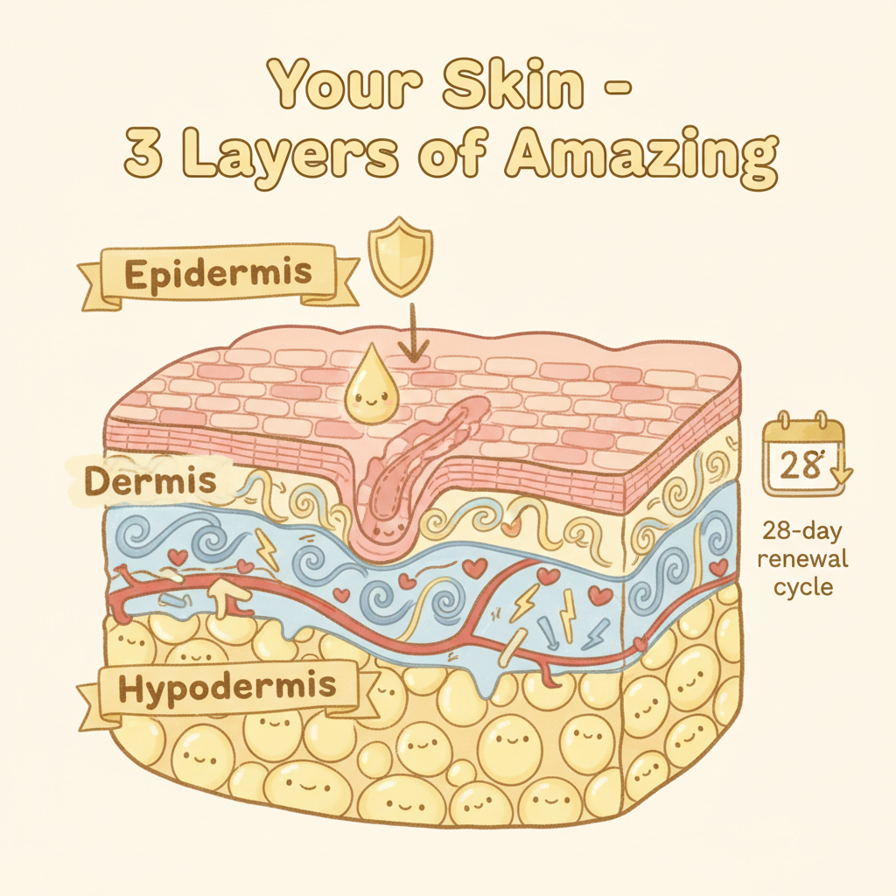

皮膚三層結構（科學版）

大部分人對皮膚的認知就是「一張臉」。但如果你把皮膚放大來看，它有三層完全不同的結構，每一層做的事情都不一樣。搞清楚這個，你就不會再被廣告話術牽著走了。
表皮層Epidermis
你肉眼看到的皮膚，其實只是表皮層最外面那一層。整個表皮層薄得像保鮮膜，但它分成五個亞層，從外到內分別是：
- 角質層（Stratum Corneum）— 最外層，由已經「退休」的角質細胞堆疊而成。很多人急著去角質，但這層不是垃圾，它是你的第一道防線。把它想成城牆的磚塊
- 透明層（Stratum Lucidum）— 只出現在手掌和腳底，是額外的保護
- 顆粒層（Stratum Granulosum）— 細胞開始釋放脂質，形成防水屏障
- 棘狀層（Stratum Spinosum）— 免疫細胞（蘭格漢斯細胞）駐紮在這裡，幫你抵抗外來入侵者
- 基底層（Stratum Basale）— 新細胞在這裡誕生，往上推，大約 28 天抵達角質層完成使命
這裡住著三種關鍵細胞：角質形成細胞（keratinocytes，佔 95%，建造城牆的工人）、黑色素細胞（melanocytes，負責膚色和抵擋紫外線）、蘭格漢斯細胞（Langerhans cells，皮膚裡的免疫巡邏兵）。
28 天的更新週期，是皮膚自我修復的基本節奏。很多護膚品說「立即見效」，但皮膚的生理時鐘不會因為你多花了錢就轉得更快。
真皮層Dermis
如果表皮是城牆，真皮就是城牆後面的整座城市。這裡有：
- 膠原蛋白（Collagen）— 佔真皮層 70% 以上的結構蛋白，負責皮膚的彈性和飽滿度。25 歲之後每年流失大約 1%。這不是行銷恐嚇，這是生物學
- 彈性蛋白（Elastin）— 讓皮膚拉伸後能彈回來的纖維。一旦斷裂就很難再生，所以不要用力拉扯皮膚
- 纖維母細胞（Fibroblasts）— 製造膠原蛋白和彈性蛋白的工廠
- 血管網絡 — 負責輸送營養和帶走廢物。你臉紅的時候，就是真皮層的血管在擴張
- 神經末梢 — 觸覺、溫度、疼痛，都是這些神經在傳遞訊號
膠原蛋白從 25 歲開始走下坡，這件事本身不值得焦慮。但紫外線會加速它的崩解，這個是你可以預防的。
皮下組織Hypodermis
最深的一層，主要由脂肪細胞組成。它做三件事：
- 緩衝墊 — 保護你的骨骼和內臟不受撞擊
- 保溫層 — 維持體溫穩定
- 能量儲存庫 — 需要的時候釋放能量
隨著年齡增長，皮下脂肪會重新分布（臉頰凹陷、下巴鬆弛），這不是護膚品能處理的範圍。了解這個界線很重要。
精油如何穿透皮膚屏障
角質層的磚塊之間有脂質「水泥」（主要是神經醯胺、膽固醇、脂肪酸）。分子量小於 500 道爾頓（Daltons）的物質可以穿過這些脂質間隙，被動擴散進入更深的皮膚層。
精油的分子量大多在 130 到 250 道爾頓之間，遠低於 500 的門檻。所以它們能滲透，不是魔法，是物理化學。但滲透不代表到得了血液循環——大部分精油分子在真皮層就被代謝掉了。
常見皮膚問題的科學解釋
每個皮膚問題背後都有一個生理機制在運作。搞懂機制，你就知道什麼有用、什麼只是安慰劑。點開每張卡片看細節。
痘痘與粉刺
到底發生了什麼事
痘痘的形成需要四個條件同時成立：皮脂腺分泌過多油脂、毛囊開口被角蛋白堵塞、痤瘡丙酸桿菌（P. acnes）在缺氧環境裡大量繁殖、免疫系統發動發炎反應。少了任何一個，痘痘就長不出來。
什麼真的有幫助
- 溫和清潔（不是用力洗）
- 避免高糖高乳製品飲食（有研究支持，但個體差異很大）
- 不要擠。發炎的痘痘擠了只會更慘
什麼其實沒用
- 「深層清潔」——毛孔裡的問題不是用洗的能解決的
- 酒精收斂水——暫時收縮毛孔，但會破壞皮脂膜，引發更多出油
精油建議
- 茶樹（Tea Tree）— 研究證實對 P. acnes 有抑菌效果
- 薰衣草（Lavender）— 抗發炎，幫助舒緩紅腫
- 濃度：1-2%，搭配荷荷芭油作基底
敏感肌
到底發生了什麼事
敏感肌的核心問題是屏障功能受損。角質層裡的神經醯胺（ceramide）流失，磚塊之間的水泥不夠了，外界刺激物長驅直入。加上神經源性發炎——你的神經末梢變得過度敏感，正常的溫度變化或觸碰都會被解讀為「威脅」。
什麼真的有幫助
- 簡化保養步驟（步驟越多，刺激源越多）
- 補充神經醯胺和脂肪酸（修復水泥）
- 避免頻繁更換產品
什麼其實沒用
- 標榜「敏感肌專用」但含有香精的產品
- 不斷嘗試新東西——每換一次就是再刺激一次
精油建議
- 羅馬洋甘菊（Roman Chamomile）— 含甜沒藥醇，溫和抗炎
- 乳香（Frankincense）— 促進細胞修復
- 濃度：0.5-1%，極低濃度，基底用甜杏仁油或金盞花浸泡油
老化與皺紋
到底發生了什麼事
老化分兩種。自然老化（chronoaging）是基因決定的時鐘，膠原蛋白每年減少約 1%，彈性蛋白逐漸失去彈性。光老化（photoaging）是紫外線造成的額外傷害——UV-A 穿透到真皮層，產生自由基，加速膠原蛋白崩解。80% 的「看起來老」其實是光老化，不是自然老化。
什麼真的有幫助
- 防曬——這是唯一經過大量研究驗證、確實能延緩光老化的行為
- 抗氧化劑（維生素C、維生素E）中和自由基
- 充足睡眠——生長激素在深度睡眠時分泌，修復白天的損傷
什麼其實沒用
- 口服膠原蛋白——消化系統會把它拆成胺基酸，不會直達你的臉
- 「逆齡」產品——沒有任何外用品能逆轉已經斷裂的彈性蛋白
精油建議
- 玫瑰（Rose）— 含抗氧化多酚，香氣本身也有情緒舒緩效果
- 乳香（Frankincense）— 傳統上用於促進細胞更新
- 胡蘿蔔籽油（Carrot Seed）— 含天然類胡蘿蔔素，抗氧化
- 基底油推薦：玫瑰果油（富含維生素A前驅物）
色素沉澱與斑點
到底發生了什麼事
黑色素本來是好東西——它像遮陽傘一樣擋住紫外線，保護你的 DNA 不被破壞。但有時候黑色素細胞會「過度反應」：紫外線照射後的反彈（曬斑）、發炎痊癒後的色素殘留（痘印）、荷爾蒙變化導致的大面積沉積（肝斑/孕斑）。這三種成因不同，處理方式也不一樣。
什麼真的有幫助
- 防曬（又是它，因為紫外線會讓所有類型的色素沉澱都惡化）
- 酪氨酸酶抑制劑——市面上 80% 的美白產品在做的事就是這個
- 耐心——色素代謝需要數個月，沒有速效方法
什麼其實沒用
- 頻繁做「亮白」療程——過度刺激反而可能引發更多色素沉澱
- 不分斑點類型就亂塗藥膏
精油建議
- 檸檬（Lemon）— 含檸檬烯，但注意：柑橘類精油有光敏性，用了之後 12 小時不能曬太陽
- 天竺葵（Geranium）— 調節皮脂，促進膚色均勻
- 濃度：1%，只在晚間使用
乾燥與脫皮
到底發生了什麼事
皮膚乾燥的學名叫「經皮水分散失」（Transepidermal Water Loss，TEWL）。你的角質層屏障不夠緻密，水分像沒蓋蓋子的杯子一樣不斷蒸發。通常是因為神經醯胺（ceramide）不足——這些脂質是角質層「磚塊」之間的水泥，水泥不夠，水就留不住。
什麼真的有幫助
- 保濕分兩步：先補水（玻尿酸、甘油等吸水成分），再鎖水（油脂、角鯊烯等封閉性成分）
- 洗完臉 3 分鐘內上保濕——角質層含水量最高的時候鎖住它
- 減少熱水洗臉的頻率——熱水會帶走天然皮脂
什麼其實沒用
- 噴保濕噴霧但不擦油——水噴上去蒸發掉的時候會帶走更多水分
- 只用乳液不用油脂——乳液的封閉性通常不夠
精油建議
- 檀香（Sandalwood）— 保濕鎖水，適合乾燥老化肌
- 天竺葵（Geranium）— 平衡皮脂分泌
- 基底油推薦：玫瑰果油（滲透性好）或荷荷芭油（最接近人體皮脂的植物油）
油性肌膚
到底發生了什麼事
皮脂腺的活躍程度主要受兩個因素控制：荷爾蒙（特別是雄性激素 DHT）和遺傳。青春期出油多是因為荷爾蒙波動；成年後持續出油通常是基因決定的皮脂腺數量和敏感度。壓力也會透過皮質醇間接增加皮脂分泌。
什麼真的有幫助
- 溫和清潔，一天兩次就夠了
- 用輕質保濕——油性肌膚也需要保濕，缺水反而會刺激更多出油
- 含菸鹼醯胺（維生素B3）的產品有研究支持能調節皮脂
什麼其實沒用
- 吸油面紙——吸走表面的油，皮脂腺 30 分鐘內就補回來
- 強力去油洗面乳——破壞皮脂膜後，皮脂腺收到「油不夠」的訊號，反而更拼命分泌
精油建議
- 絲柏（Cypress）— 收斂效果，調理毛孔
- 檸檬（Lemon）— 清潔力好，但同樣注意光敏性
- 茶樹（Tea Tree）— 抑菌 + 控油雙效
- 基底油推薦：荷荷芭油（液態蠟，不會堵塞毛孔）
精油與皮膚的科學
精油不是仙丹，但也不是噱頭。它有明確的分子機制在運作。搞懂這些，你就能分辨哪些說法有根據、哪些只是在賣感覺。
精油的三種作用路徑
精油作用在皮膚上，主要走三條路：
第一，分子滲透。精油分子小（130-250 Da），可以穿過角質層的脂質間隙進入表皮和真皮層。到了真皮層，部分活性成分會與細胞受體結合，觸發抗發炎或抗菌的級聯反應。
第二，抗菌活性。很多精油含有的單萜烯醇（如沉香醇、萜品烯-4-醇）能破壞細菌的細胞膜結構。茶樹精油對 P. acnes 的抑菌效果有多項臨床研究支持。
第三，嗅覺-神經-免疫軸。嗅覺信號直達邊緣系統，影響壓力荷爾蒙的分泌。壓力降低 → 皮質醇降低 → 發炎反應減少 → 皮膚狀態改善。這條路徑是間接的，但真實存在。
精油 vs. 人工香精：受體結合的差異
天然精油的分子能與嗅覺受體蛋白結合，啟動神經信號傳遞。人工合成的香精（fragrance）模仿氣味，但分子結構不同，受體結合的效率和方式也不同。
簡單來說：聞起來像薰衣草，不代表它能觸發薰衣草引起的那套神經反應。香水讓你覺得好聞，但不一定能讓你的皮質醇降下來。
基底油：不是稀釋用的配角
基底油不只是用來稀釋精油的溶劑——它們本身就有護膚功效，而且是精油的「運輸系統」。選對基底油，效果差很多：
► 荷荷芭油（Jojoba）— 嚴格來說是液態蠟，分子結構最接近人體皮脂。皮膚辨識它為「自己人」，吸收快、不堵塞毛孔。油性肌膚的首選基底。
► 玫瑰果油（Rosehip）— 富含亞麻油酸和維生素A前驅物（視黃醇），適合老化和色素沉澱的肌膚。
► 摩洛哥堅果油（Argan）— 富含維生素E和脂肪酸，修復屏障、抗氧化，乾燥肌的好夥伴。
稀釋濃度：這不是可以省略的步驟
精油是高度濃縮的植物萃取物。一滴玫瑰精油需要大約 60 朵玫瑰。直接塗在皮膚上，刺激性會遠超過你想像。稀釋不是因為怕浪費，是因為皮膚承受不了那個濃度。
| 使用部位 | 建議濃度 | 精油滴數/10ml基底油 | 適用情境 |
|---|---|---|---|
| 臉部 | 0.5 - 1% | 1 - 2 滴 | 日常保養、敏感肌 |
| 臉部 | 1 - 2% | 2 - 4 滴 | 局部問題處理（痘痘、斑點） |
| 身體 | 2 - 3% | 4 - 6 滴 | 按摩、一般保養 |
| 身體 | 3 - 5% | 6 - 10 滴 | 肌肉痠痛、短期局部使用 |
| 敏感部位 | 0.25 - 0.5% | 約 1 滴 | 兒童、孕婦、極敏感肌 |
用多了不會效果更好，只會讓皮膚過敏。這是做了 34 年不會變的經驗法則。
護膚迷思破解
這些迷思我在美業 34 年裡聽了不下一千遍。每次聽到都會心裡嘆一口氣。不是怪你不懂，是因為太多廣告在誤導。
「天然就是安全」
河豚毒素是天然的。毒蘑菇是天然的。你不會因為它們天然就放心吃下去。精油也一樣——肉桂醛直接接觸皮膚會造成化學灼傷；柑橘類精油含有呋喃香豆素，塗了之後曬太陽會引發嚴重的光敏性反應（起水泡、色素沉澱）。天然和安全之間，隔著一個「正確使用」。所有的精油都需要稀釋，所有的安全都需要知識。
「毛孔可以縮小」
毛孔的大小主要由基因決定。你的毛孔該多大，出生的時候就決定了。能做的事情有兩件：第一，保持毛孔乾淨（減少堵塞），讓它看起來不那麼明顯；第二，用收斂性成分（如金縷梅、菸鹼醯胺）暫時讓周圍皮膚緊緻。但這些效果都是暫時的，毛孔本身的物理結構不會改變。花大錢買「毛孔隱形」產品之前，先接受這個事實會比較不容易失望。
「去角質越多越好」
前面說過，角質層是你的城牆，不是垃圾。正常的角質層由 15-20 層角質細胞緊密排列而成，它阻擋紫外線、阻擋細菌、阻擋水分蒸發。過度去角質等於拆自己的城牆——結果就是敏感、泛紅、越來越薄。一般皮膚一週一次溫和去角質已經足夠。敏感肌兩週一次，或乾脆不做。你的皮膚有自己的更新節奏（28天），不需要你催它。
「貴的就是好的」
一瓶 NT$5,000 的面霜和一瓶 NT$500 的面霜，核心成分可能一模一樣。價差來自包裝、行銷預算、品牌溢價、專櫃租金。不是說貴的一定不好——有些高端品牌確實在研發上投入很多——但重點永遠是成分表，不是價格標籤。學會看成分表比學會看價格重要一百倍。配方的關鍵在濃度和比例，這兩件事從價格上看不出來。
「喝水就能保濕」
你喝的水先進入消化系統、被小腸吸收進血液、循環到全身各器官——皮膚是最後才排到隊的。而且，水到了真皮層，還要靠角質層的屏障功能才留得住。如果屏障有問題，水從裡面蒸發的速度比你喝的還快。體內補水和皮膚保濕是兩件事，兩個都要做，但不能用一個替代另一個。喝水很好，但解決不了角質層的問題。
皮膚冷知識 5 則
這些事情你可能從來沒想過，但每一件都跟你的日常護膚有關。知道這些不會讓你變成皮膚科醫生，但會讓你更理解自己身上這層東西到底在幹嘛。
皮膚是你身上最大的器官
攤開來大約 1.5 到 2 平方公尺，重量占體重的 16% 左右。比你的肝臟大、比你的腸子重。它不只是一層包裝紙，它是一整套防禦系統、溫度調節器、感覺接收器。你花那麼多時間照顧臉，其實臉只佔皮膚總面積很小的一部分。
你每天掉 4 萬個皮膚細胞
聽起來很嚇人，但這是正常的。角質層的細胞大約 28 天完成一次代謝週期，老的脫落、新的頂上來。一年下來，你等於換掉了整張皮膚好幾次。所以那些號稱「永久改變膚質」的產品，你可以想一下邏輯上說不說得通。
壓力讓皮膚變差不是心理作用
這件事有生理機制。壓力會讓你的腎上腺釋放皮質醇（cortisol），皮質醇升高會刺激皮脂腺分泌更多油脂，毛孔堵塞，痘痘就來了。同時皮質醇還會抑制膠原蛋白合成，讓皮膚修復變慢。所以考試前、deadline 前冒痘不是巧合，是你的身體在告訴你它撐不住了。
腸道健康直接影響皮膚
醫學上叫「腸 — 皮軸」（gut-skin axis）。腸道菌群失衡的時候，腸壁通透性增加，發炎因子跑進血液循環，最後反映在皮膚上——冒痘、泛紅、敏感、甚至酒糟都跟腸道有關。這也是為什麼有些人改善飲食之後，皮膚狀況會跟著好轉。不是迷信，是有研究支撐的。
晚上 11 點到凌晨 2 點是皮膚修復高峰
這段時間生長激素（growth hormone）分泌最旺盛，細胞分裂速度加快，皮膚的自我修復機制全力運轉。所以「美容覺」不是噱頭，是有道理的。你塗再貴的精華液，效果都比不上在這個時段好好睡著。反過來說，長期熬夜的人皮膚修復速度會明顯下降，老化也來得更快。
早晚護膚儀式 × 精油版
護膚步驟不用多，重要的是順序對、產品對、然後日復一日堅持做。下面是我自己在用的精油護膚流程，很簡單，十分鐘內搞定。
早晨｜清醒 + 保護
溫水洗臉就好，不需要用很強的洗面乳。早上的臉不髒，只是有一些夜間代謝的油脂和汗液，溫水加上溫和的潔面乳就夠了。
洗完臉趁皮膚還濕的時候，塗一層 1% 天竺葵保濕油。天竺葵（Geranium）調節皮脂的效果很好，不管你是偏油還是偏乾，它都能幫你平衡。1% 的意思是 10ml 基底油裡面加 2 滴精油，用荷荷芭油或甜杏仁油當基底都行。
最後一步是防曬。這是整個護膚流程裡最重要的一步，沒有之一。紫外線造成的光老化佔皮膚老化因素的 80%。你可以不擦精華液、不做面膜，但防曬不能省。
晚上｜清潔 + 修復
有上妝或防曬的話，先用卸妝油或卸妝乳把那一層東西溶掉，再用溫和的潔面乳洗第二次。這叫雙重潔面，目的是確保毛孔裡面沒有殘留。
洗完之後，塗 1% 薰衣草修復油。真正薰衣草（Lavandula angustifolia）裡的沉香醇和乙酸沉香酯有舒緩和促進細胞再生的作用，很適合睡前用。同樣的比例：10ml 基底油加 2 滴薰衣草精油。
每週做一次乳香面膜：1 滴乳香精油 + 1 茶匙蜂蜜 + 1 茶匙無糖優格，攪勻敷臉 15 分鐘。乳香有促進細胞更新的傳統用途，蜂蜜保濕，優格裡的乳酸溫和去角質。三個加在一起，隔天早上摸臉會有感覺。
創辦人的話
我做了 34 年的美業。從學徒開始，到拿碩士學位研究「美容愉悅感與身體意象」，到現在用馥靈之鑰整合 33 套智慧系統。我碰過的皮膚大概比大部分人一輩子見過的臉還多。
這些年我看到太多人因為不了解自己的皮膚，花了冤枉錢、受了不必要的罪。有人被話術嚇到以為自己的臉快爛了，有人因為用錯方法反而把好好的皮膚搞壞了。
所以這頁不賣任何東西。沒有產品連結，沒有購買按鈕，沒有「限時優惠」。就是把我知道的事情說清楚，用你看得懂的話。
護膚的終點不是完美的皮膚，是接受自己的皮膚，然後好好照顧它。
皮膚是你身上最大的器官。它陪你淋過雨、曬過太陽、哭過笑過熬過夜。它不需要被嫌棄，它需要被理解。
如果你想更了解自己——不只是皮膚，而是你這個人——可以去做做看我們的心理測驗，或者用命盤引擎跑一次自己的數據。覺察從任何一個角度開始都可以，皮膚只是其中一個入口。
— 王逸君，馥靈之鑰創辦人｜美業資歷 34 年+｜碩士（健康產業管理研究所）